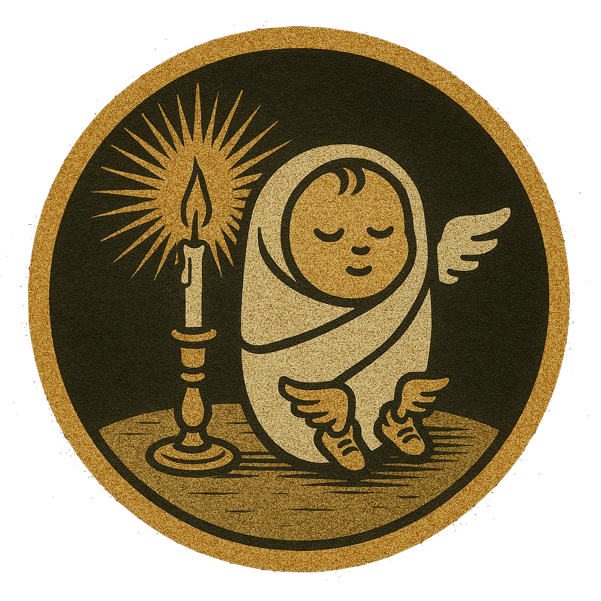
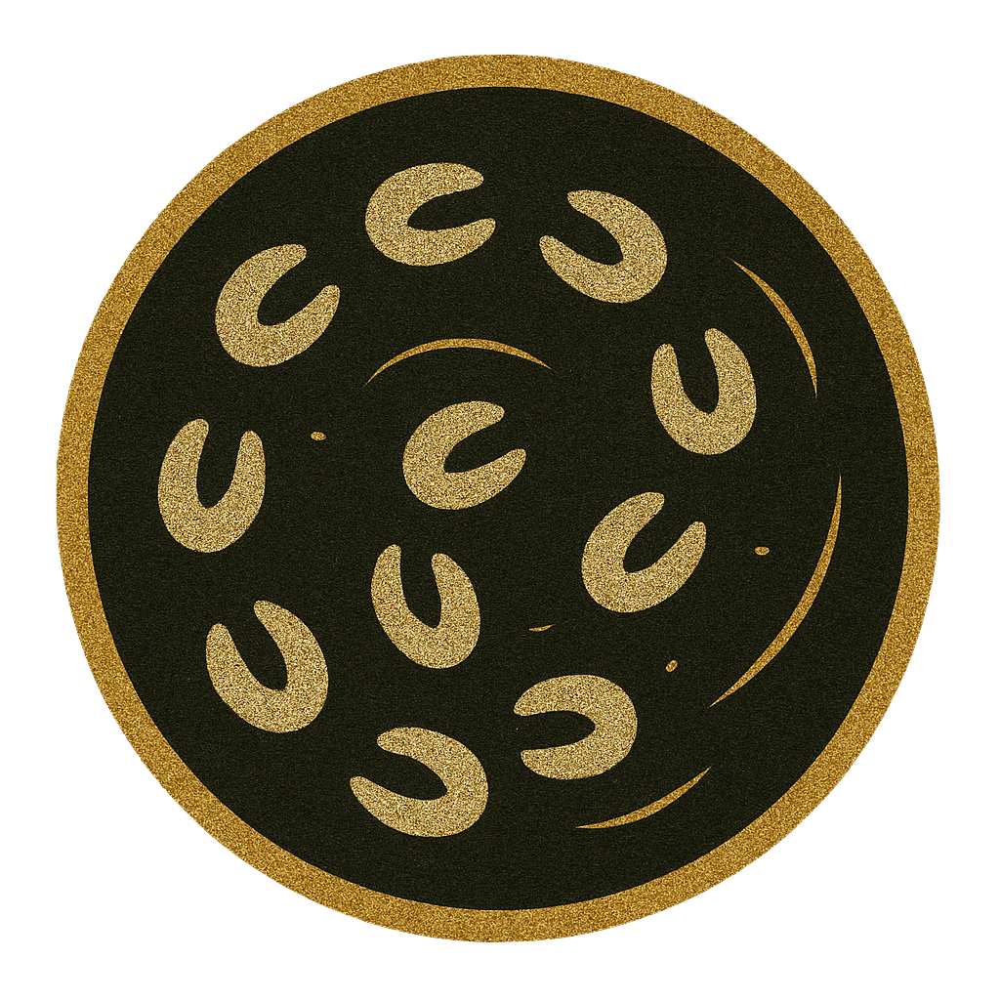
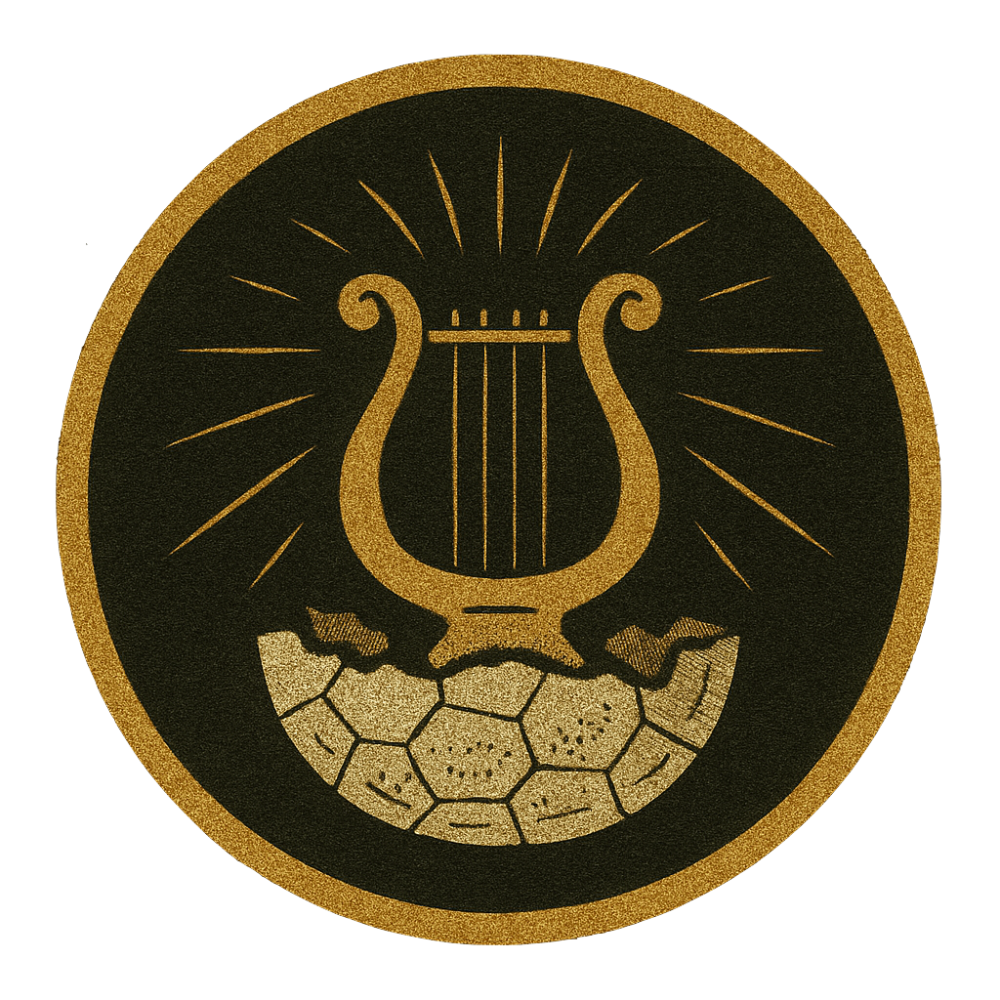
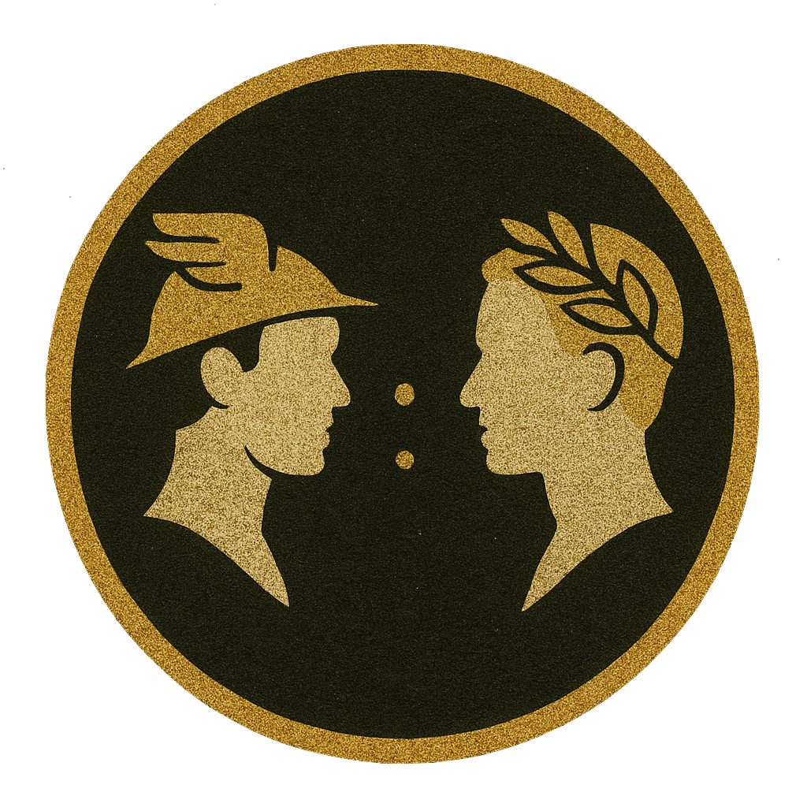
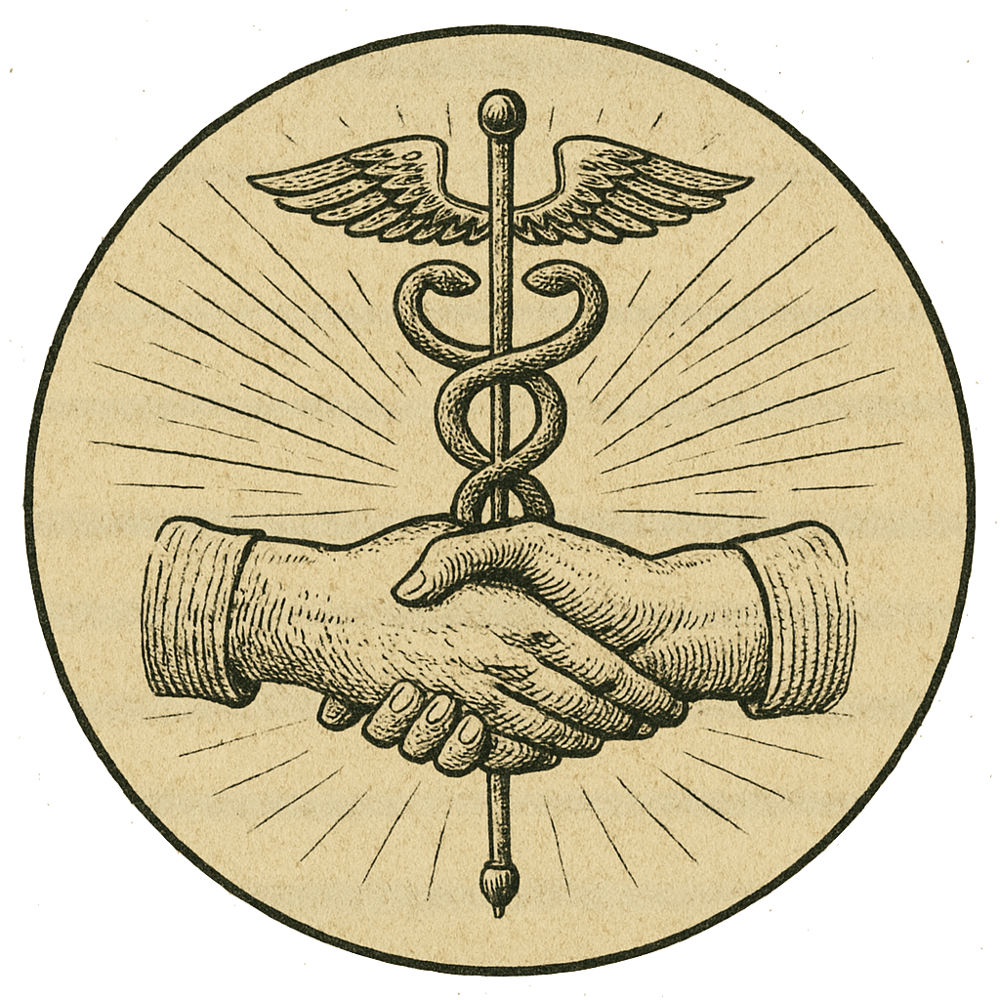
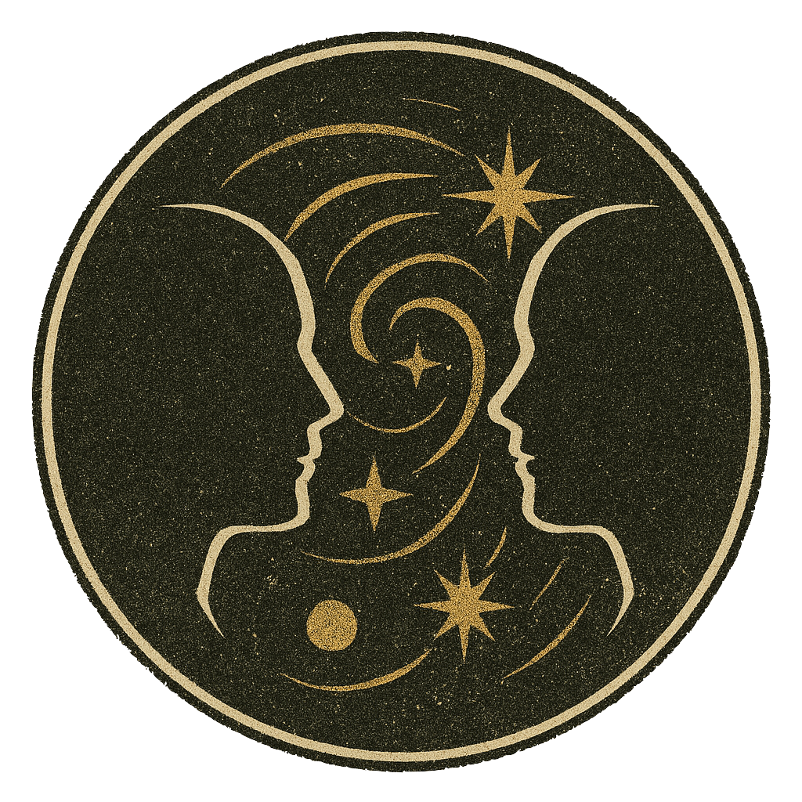

I – El Nacimiento de Hermes
En la penumbra del monte Cilene, en la cueva de la ninfa Maya, nació Hermes, hijo de Zeus, con los pies alados y la mirada astuta ya cargada de intención. No lloró. Se rió. Y donde otros dormían, Hermes ya tramaba.
Hermes fue una grieta en la quietud.
Al caer la tarde de ese mismo día, había abandonado la cuna, salido del refugio, y dejó tras de sí sólo el susurro del viento y la sospecha de un dios que no obedecería las reglas del tiempo.
Porque Hermes no se quedó. Hermes partió.

II – El Robo del Ganado
Aún húmedo del rocío de su nacimiento, Hermes abandonó la cueva bajo el manto de la noche. Cruzó el mundo, una sombra con propósito, y halló el ganado sagrado de Apolo paciendo en la quietud. No las veneró. Las guió hacia atrás.
Hermes, el astuto, el veloz, el aún-sin-cuna, cincuenta cabezas hurtó con divina elegancia y picardía mortal. Desvió sus huellas, torció sus pasos, y caminó al revés para que ni el mismo destino pudiera seguirlo. Dos ofrendó —no por crueldad, sino por ingenio— y con el caparazón vacío de una tortuga y tensas cuerdas de tripa, dio a luz la lira.
Porque Hermes no se disculpó. Hermes compuso.

III – La Confrontación
Apolo descendió del cielo como el mediodía: recto, ardiente, sin espacio para sombras. Y halló a Hermes envuelto en pañales, con la mentira más antigua en los labios más nuevos.
Hermes negó. Hermes juró. Arguyó Hermes no saber aún de palabras, apenas sosteniendo la cabeza infante. Mas Apolo, que contaba su ganado como estrellas, no cedió al engaño del pañal ni al brillo inocente. Los dioses se rieron. Zeus observó. Y Hermes, sin doblegarse, reveló el arte de no caer, aun siendo descubierto.
Porque Hermes no mintió. Hermes narró otra versión.

IV – El Intercambio
Hermes, el mismo que robó reses antes de su primer sueño, tomó la lira en sus manos pequeñas, y dejó que hablara por él. No pidió perdón. Cantó.
La melodía cruzó el Olimpo, un relámpago gentil. No era un himno. No era lamento. Era algo nuevo. Apolo, dios de la armonía, oyó en la vibración algo innombrable para el juicio o la furia. Y entonces… cedió. Y ofreció a Hermes su propio báculo: el caduceo, vara de caminos, de equilibrio y frontera. No como castigo. Sino como pacto.
Porque Hermes no huyó. Hermes convenció.

V – El Vínculo Forjado
Apolo tomó la lira. Hermes alzó el caduceo. Y en ese gesto, más poderoso que un decreto de Zeus, sellaron no un castigo, sino un equilibrio.
El dios del arte y el dios del tránsito no quedaron enfrentados por el juicio, sino unidos por su creación conjunta: música nueva, armonía entre sendas. Hermes, hijo del paso fugaz y la palabra esquiva, encontró en Apolo no un adversario, sino un eje firme donde apoyarse. Y Apolo, señor de la luz, comprendió que hasta la claridad precisa de la sombra para definirse.
Porque Hermes no fue perdonado. Hermes fue comprendido.

VI – Epílogo
Del engaño surgió el arte. De la confrontación, el acuerdo. Y entre un paso y una nota, nació un vínculo más fuerte que el castigo: la comprensión entre dioses que aprendieron a verse.
Hermes siguió caminando. Apolo, tocando. El caduceo se alzó, la lira sonó, y el mito no terminó— sólo cambió de forma, como todo lo que merece sobrevivir. Donde el desequilibrio clama, y alguien responde con armonía. Donde la falta pesa, y un gesto suple a la palabra… Hermes está presente. Y Apolo también. Porque el lazo que forjaron no pertenece al pasado. Pertenece a quienes todavía creen en el poder de intercambiar ofensa por belleza.
Porque Hermes no fue vencido. Hermes fue recordado.
Una Carta a Hermes
Al Mensajero Veloz, Maestro de Transiciones,
Quería que esta carta, o bueno, esta página, fuera especial, al menos en su concepción. Si el mensaje en sí no llegaba a conmoverte, o si mis palabras parecían vacías después de todo, al menos quería que vieras el esfuerzo, que supieras que sigues importándome muchísimo, que estás presente en mi vida igual que siempre. Dediqué tiempo estos días a intentar hacer esto... no sé si te guste, la verdad no quedó tan pulido como imaginaba. No te culparía si no te agrada ni un poco.
Cuando conocí este mito de Hermes y Apolo, el año pasado, quise contártelo. Quizá entonces no había pasado lo de estas últimas semanas y meses, pero creo que la comparación que hacía en mi mente sigue siendo válida: me has dado tanto, pero sobre todo, he podido verte crecer, evolucionar... transmutar, igualito que Hermes. Admiro esa capacidad tuya.
Y hablando de errores... cabrón, no debí mentirte el otro día. Mucho menos mandarte esos emojis. Entendí perfectamente que estabas harto, que te había vuelto a lastimar, y por eso decidí darte espacio, no hablarte. Pero por dentro estaba destrozado, sintiendo que habíamos perdido todo el avance de las últimas semanas por mi estupidez. Empecé a hacer esto justo ese día.
En mi cuaderno sigue la otra carta, la que tiene más contexto. Esa aún no te la haré llegar; me gustaría dártela poco antes de tu cumpleaños, idealmente en persona. O si de plano la economía no me deja ir a verte, te la mandaría por paquetería. Claro, eso si tú quieres recibirla. Si prefieres no saber de mí por un tiempo, o indefinidamente, de verdad lo voy a entender.
Debes estar a unas horas de irte al aeropuerto. Estoy muy feliz por ti, sinceramente. Es un nuevo comienzo, algo que llevas queriendo y planeando tanto tiempo. No dudo que les irá increíble, contigo como líder. Pero al mismo tiempo me siento fatal por cómo la has pasado estos últimos días por mi culpa. De verdad, vales muchísimo para mí, cabrón, y siempre he querido solo lo mejor para ti.
Cuídate mucho, cabroncito. Espero que puedas perdonarme, o al menos, que podamos mantener algún canal de comunicación, saber cómo te va. Pero sé que eso quita tiempo, así que entenderé si decides que no. Por mi parte, sigo firme en mi postura de cambio, aunque sé que mi palabra ahora vale poco para ti porque te volví a fallar. Me pone muy triste cada vez que me dices que no cambiaré, pero créeme que lo estoy haciendo, sigo firme.
Perdón también por no contestarte el otro día que fuiste a la casa, de verdad estaba dormido como te dije, el celular no sonó. Y ya no tenía dinero esta semana para moverme a verte. Cuando pasamos por tu casa con mis papás, me sentí fatal; te busqué por donde dijiste que ibas al gym, a ver si te veía de lejos, pero nada. Sé que quizá piensas que ya te dejé ir, pero no es así, cabrón. Sigues en mi mente todo el tiempo.
De nuevo, perdón si esto parece poco, pero es lo que inspiras en mí: esta necesidad de crear algo. Gracias por tanto. Te llevo siempre en mi corazón y en mi mente. Me gustaría verte pronto, saber de ti. El sombrerito que me diste y la cadena están sobre la imagen de Joselito, cuidándolos. Cuídate tú también en tu nuevo comienzo, que te vaya increíble. Estoy muy orgulloso de la persona que eres.
Con mucho cariño, te quiere:
-Néstor
Una Ofrenda en el Éter
El Caduceo, más que un simple báculo, es un símbolo profundo resonando a través de eras y disciplinas. Representa el equilibrio, la mediación y la transformación:
El Caduceo: Tradicionalmente portado por Hermes (Mercurio), es la vara del heraldo, símbolo del comercio, la elocuencia y el paso seguro entre mundos. Sus dos serpientes entrelazadas representan la dualidad – luz y sombra, masculino y femenino, veneno y cura – ascendiendo en equilibrio alrededor de un eje central, la columna vertebral del cosmos y del ser.
Transmutación Alquímica: En la alquimia, Hermes Trismegisto guía el proceso de transmutación: la transformación de la materia base (el plomo del ego no refinado) en oro espiritual (la conciencia iluminada). Es un viaje interior de purificación, integración de opuestos y el despertar del potencial divino latente.
Despertar Kundalini: Similarmente, la energía Kundalini, descrita en las tradiciones yóguicas como una serpiente dormida en la base de la columna, asciende al despertar a través de los centros energéticos (chakras). Su ascenso, a menudo visualizado como dos canales entrelazados (Ida y Pingala) alrededor de un canal central (Sushumna), refleja la imagen del Caduceo y culmina en la unión de las energías terrenales y divinas, llevando a la iluminación y la expansión de la conciencia.
Toca abajo para manifestar este poderoso símbolo en tu espacio, un recordatorio del equilibrio y la transformación constante.
(Requiere un dispositivo iOS compatible con RA.)